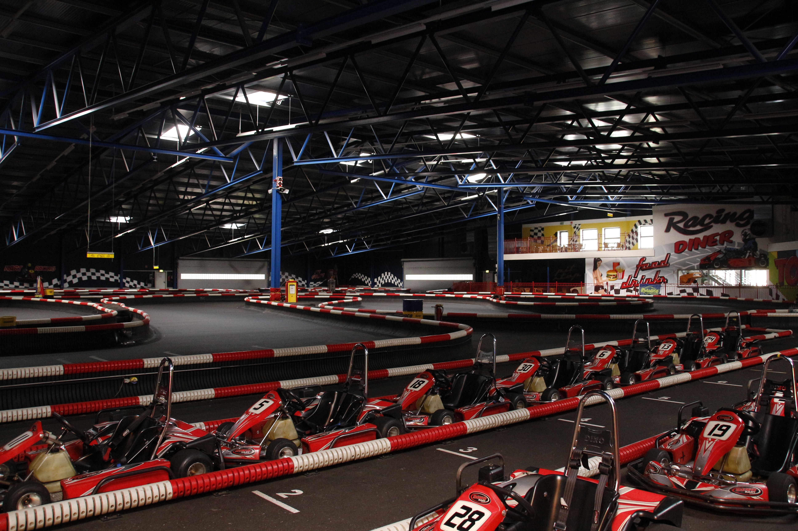

Pitbike
Speed-Area

Die Speed-Area in Wuppertal bietet uns Regelmäßig die Möglichkeit unser Können an bis zur Grenze auszureizen. Die Indoor-Kartbahn bietet 480 Meter puren Fahrspaß und die Gruppen sind immer lustig. Kein Wunder, dass es uns hier alle zwei Wochen hinzieht.
Kartbahn Meppen
Die Kartbahn am Circuit Meppen ist eine reine Achterbahn, wer viel Ausdauer hat und es genauso sehr liegt wie wir durchgehend in Schräglage zu fahren, wird sich hier sehr wohlfühlen. Mit knapp 725 Metern zählt die Kartbahnen zu den längsten in Europa. Ein weiterer Punkt der uns immer wieder nach Meppen zieht ist die kombination aus einer Indoor- und Outdoorkartbahn.
Rennstrecke
Meppen
Um mehr Vertrauen in sich selbst und das Motorrad zu gewinnen.
Oschersleben
Um mehr Vertrauen in sich selbst und das Motorrad zu gewinnen.
Straße
Was gibt es schöneres als den Feierabend auf zwei Rädern zu verbringen? Richtig - Nichts!
Neben den Events auf Kartbahnen und Rennstrecken, sind wir auf den Landstraßen des Münster- und bergischen Landes zuhause.